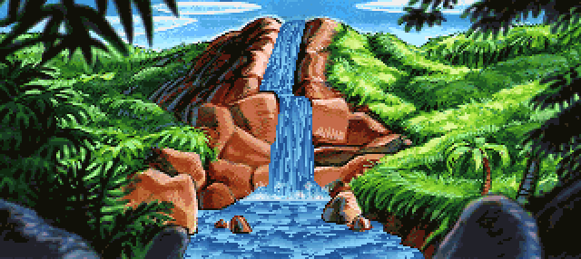

Palette animation the efficient way, native 640×286: a layered static base quantized richly (256 colors, rasterized once), an overlay covering only the flowing water with a small 24-color animated palette, and the animation on the overlay element so per-tick style recalc is scoped to it — the rich base is a sibling and never recalculates. Crisp background + smooth cycling (~40 fps vs ~10 with one 48-color palette on the container). Original GIF on the right.

deluxecss monkey_island_waterfal.gif --animate --anim-mode overlay-palette \ --inline-static-colors --max-colors-static 256 --max-colors-animated 24 -o waterfall.css